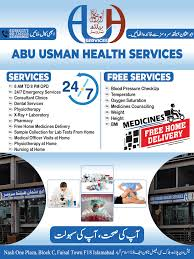
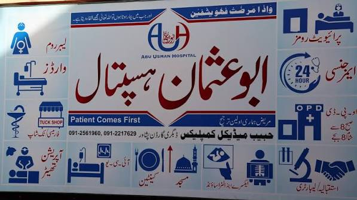

General OPD
Daily outpatient consultations with experienced physicians.
Our Services
From everyday outpatient care to advanced surgery and doorstep healthcare — everything under one roof.
Daily outpatient consultations with experienced physicians.
Round-the-clock emergency care for urgent medical needs.
Modern, fully equipped theatres for safe surgical procedures.
Advanced critical care with continuous patient monitoring.
Comfortable private rooms for restful recovery.
Dedicated, well-maintained wards for every patient.
Safe and supportive maternity and delivery care.
Accurate diagnostic testing with modern lab equipment.
High-resolution digital imaging for precise diagnosis.
Advanced ultrasound imaging by qualified radiologists.
In-house pharmacy with quality medicines at fair prices.
Professional medical care delivered at your home.
Convenient doorstep visits by our healthcare teams.
Expert surgical care across multiple specialties.
Same-day procedures with comfortable recovery areas.
On-site convenience shop for patients and visitors.

